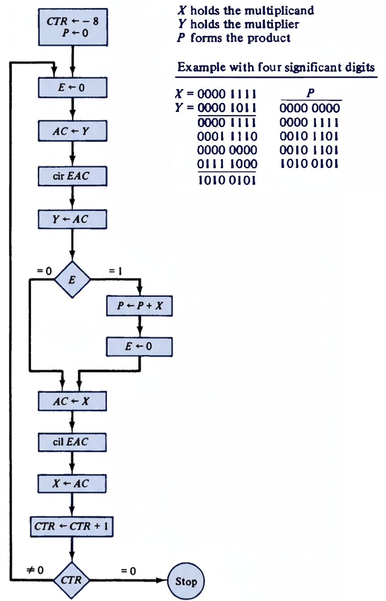

Interactive Guide to Binary Multiplication Programming
Understand the step-by-step process of multiplying two positive binary numbers using an assembly-level algorithm.
The number to be multiplied. This value remains relatively stable during the process but gets shifted left as we progress through each bit.
The number by which we multiply. Its bits are examined one by one to determine whether to add the multiplicand to the partial product.
The result formed during the multiplication process. Starts at zero and accumulates the final result through repeated additions.
This program performs multiplication using bit manipulation and repeated addition, simulating manual binary multiplication efficiently for early computers without hardware multiplication units.

Complete assembly listing with detailed comments:
Clears the extra bit register E to 0, preparing for the next operation.
CIR shifts right, CIL shifts left. These preserve bits by moving them in a circular fashion.
Tests if the E register is zero and skips the next instruction if true.
Increments the counter and skips the next instruction if the result is zero.
Let's trace through multiplying 15 (1111₂) by 11 (1011₂):
| Step | X (Multiplicand) | Y (Multiplier) | P (Product) | E Bit | Action |
|---|---|---|---|---|---|
| Initial | 0000 1111 | 0000 1011 | 0000 0000 | 0 | Setup |
| 1 | 0001 1110 | 0000 0101 | 0000 1111 | 1 | Add X to P |
| 2 | 0011 1100 | 0000 0010 | 0010 1001 | 1 | Add X to P |
| 3 | 0111 1000 | 0000 0001 | 0010 1001 | 0 | Skip addition |
| 4 | 1111 0000 | 0000 0000 | 1010 0101 | 1 | Add X to P |
15 × 11 = 165
Binary: 1010 0101₂ = 165₁₀